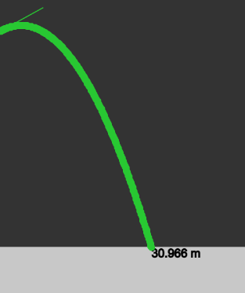
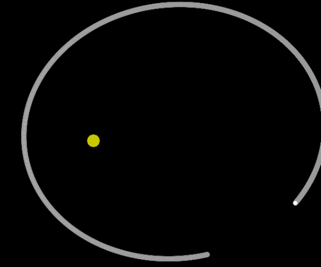

Temario
Introducción
- El estudio de la mecánica
- Mediciones y unidades
Vectores
- Álgebra vectorial
- Vectores como lenguaje de la mecánica
Cinemática
- Movimiento rectilíneo. velocidad y aceleración
- Representación vectorial de velocidad y aceleración
- Movimiento con aceleración constante
- Componentes tangenciales y normales de la aceleración
- Movimiento circular
- Movimiento curvilíneo general
Dinámica
- Primera ley de Newton
- Momento lineal
- Segunda y tercera ley de Newton
- Fricción
- Sistemas con masa variable
- Momento angular y torque
- Fuerzas centrales
Relatividad Galileana
- Velocidad relativa
- Movimiento traslacional relativo
- Movimiento rotacional relativo
Trabajo y Energía
- Trabajo
- Energía cinética
- Trabajo con una fuerza constante
- Energía potencial
- Conservación de la energía
- Teorema trabajo-energía
- Movimiento bajo fuerzas conservativas
- Fuerzas no conservativas
Sistema de partículas
- Masa total y momento lineal total
- Centro de masa
- Momento angular de un sistema de partículas
- Energía cinética de un sistema de partículas
- Conservación de la energía
Cuerpo rígido
- Momento angular de un cuerpo rígido
- Cálculo del momento de inercia
- Ecuación de movimiento
- Energía cinética rotacional
Oscilaciones
- Oscilador armónico
- Péndulo simple
- Superposición de movimientos armónicos
Gravedad
- Fuerza gravitacional
- Ley de gravitación universal de Newton
- Campo gravitacional de una esfera
- Energía potencial
- Movimiento general bajo fuerzas gravitacionales
- Leyes de Kepler
- Principio de equivalencia
Bibliografía:
- Alonso, M., Finn, J.E., Física , Addison Wesley Iberoamericana, México, (1999).
- Halliday, D., Resnick, R., Walker, J., Fundamentals of physics , 5th edition, John
Wiley & Sons, Inc., N.Y., USA, (1997).
- Kittel, Ch, Knight, W. D., and Ruderman, M. A., Mecánica , Berkeley physics
course, Volumen 1, Reverté, (1989).
Tareas y exámenes
Conservé tan sólo una tarea y unas notas.
Tarea 5
Notas
Final grade: 10
Explicaciones

Movimiento en coordenadas polares

Movimiento parabólico

Órbitas gravitacionales